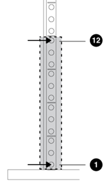
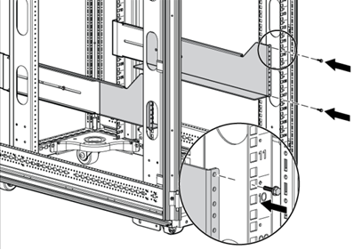
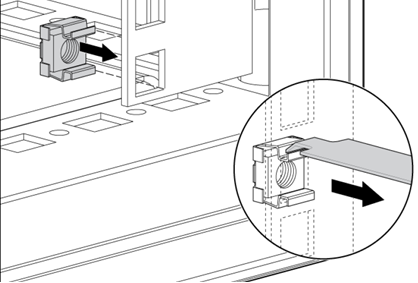
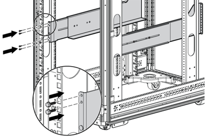
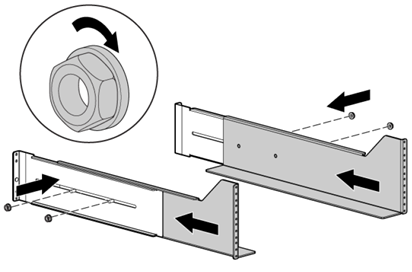

Installation of the UPS System.
-
If necessary, select the proper holes in the ground shelter
rack for the positioning of the new UPS.
The UPS rails are installed in positions 1 and 12
(see
Figure
1).
Figure 1. Holes
of the UPS Rails

-
If necessary loosen the hex nuts and extend the brackets to
the desired length (see Figure 2).
Figure 2. UPS
Rails

-
If necessary insert screws through the rack into the
mounting rail and the front of each mounting bracket (see Figure 3).
Figure 3. UPS
Rear Rack

-
If necessary install cage nuts or clip nuts into the rear
of the rack (see Figure
4).
Figure 4. UPS
Rack Cage Nuts

-
If necessary insert screws through the mounting rail into
the cage nuts or clip nuts (see Figure
5).
Figure 5. UPS
Rear Rack Mounting Rail

-
If necessary tighten the hex nuts (see Figure
6).
Figure 6.
Tightened UPS Rail

-
With one person on each side of the UPS chassis, lift the
chassis and lower it to the floor in front of the rack.
-
Install the mounting ears on the chassis (see Figure 2).
-
With one person on each side, lift the chassis to rail
level and slide the chassis on the mounting rails.
-
Attach the chassis to the rack with the supplied screws
(see Figure 1).
-
If you are using the rear mounting brackets, be sure that
the tabs are fully inserted into the rear panel cutouts, then tighten the
brackets.
-
Install all cabling, mains input connection and outputs in
accordance with your notes from the removal procedure.